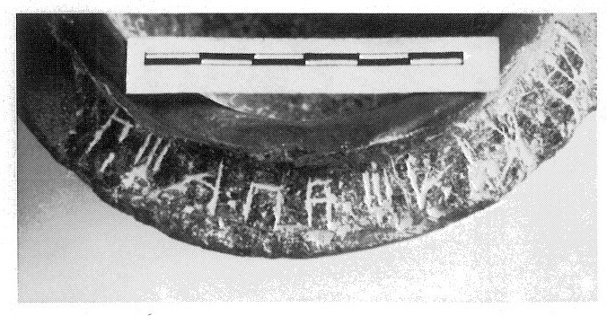
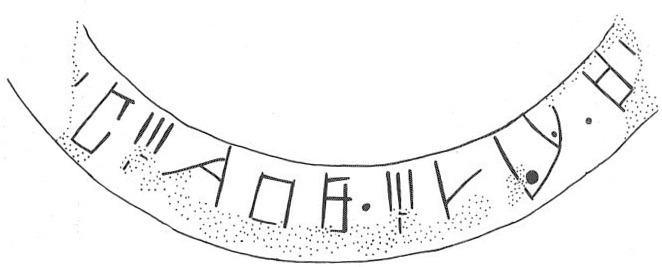

-
SYZa1
Names
SYZa1, SY Za 1
Support
Stone vessel
Location
Syme
Findspot
Unavailable


Scribe
Unavailable
Context
(first) Middle Minoan IIIB
1650-1600 BCE
Dimensions
Catalogue
Hiraklion Museum
Readings
1 1 0 A none
1 1 0 TA none
1 1 0 I none
1 1 0 *301 none
1 1 0 WA none
1 1 0 JA none
1 1 1 *900 none
1 1 2 I none
1 1 2 DA none
1 1 2 MI none
1 1 3 *900 none
1 1 4 JA none
𐘇𐘳𐘚𐙕𐘮𐘱𐄁𐘚𐘀𐘻𐄁𐘱
ATAI*301WAJA*900IDAMI*900JA
𐘇𐘳𐘚𐙕𐘮𐘱𐄁𐘚𐘀𐘻𐄁𐘱
ATAI*301WAJA*900IDAMI*900JA
SY Za 1
(HM 3459) (GORILA V:
62-63; ArchEph 2008, 197-8, 201-3), circular, pedestalled Libation Table
(Building U, room 5, MM IIIB context; H. ca. 15, D. ca. 14.5 cm)
]
A
-TA-I-*301-WA-JA • I-DA-MI • JA-•-[
Commentary © John Younger
References
papers/GORILA-Vol5.pdf#page=115